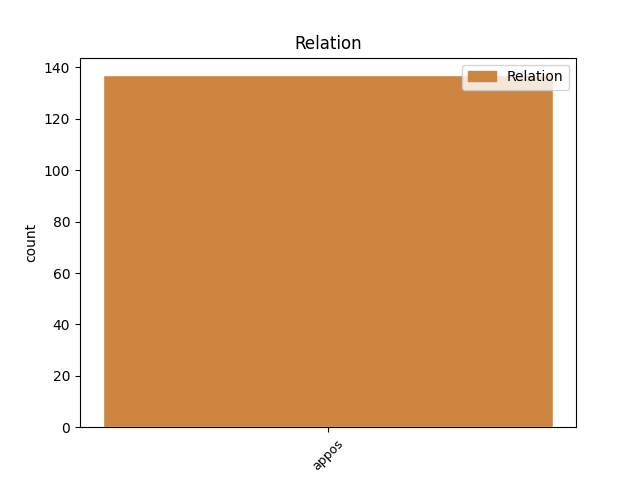
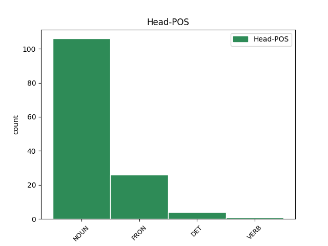
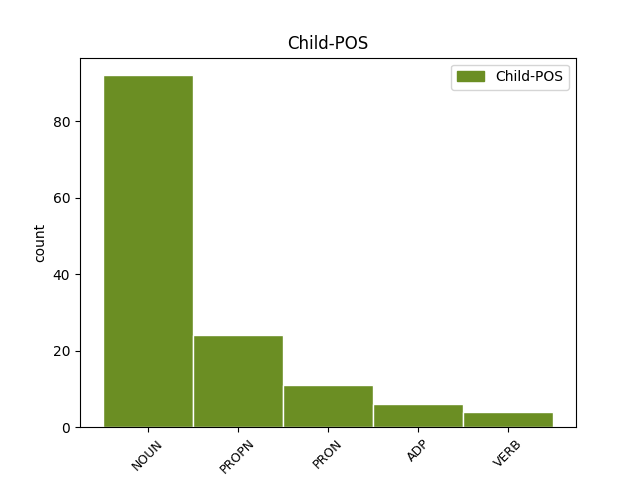

Distribution of features within this leaf



Agreement Rules sorted by frequency.
- When the dependent token is the appositional modifier(appos) of the head token, and the head token is NOUN and the dependent token is NOUN.
1 Օրինակ _ _ _ _ 0 _ _ _
2 , _ _ _ _ 0 _ _ _
3 « _ _ _ _ 0 _ _ _
4 դրական _ _ _ _ 0 _ _ _
5 սպասումների _ _ _ _ 0 _ _ _
6 » _ _ _ _ 0 _ _ _
7 ձևավորումը ձևավորում NOUN _ Animacy=Nhum|Case=Nom|Definite=Def|Number=Sing 0 _ _ _
8 ՝ _ _ _ _ 0 _ _ _
9 վարչապետի _ _ _ _ 0 _ _ _
10 Վրաստան _ _ _ _ 0 _ _ _
11 այցը այց NOUN _ Animacy=Nhum|Case=Nom|Definite=Def|Number=Sing 7 appos _ LTranslit=ayc’|Translit=ayc’ë
12 և _ _ _ _ 0 _ _ _
13 « _ _ _ _ 0 _ _ _
14 Լարսին _ _ _ _ 0 _ _ _
15 այլընտրանքի _ _ _ _ 0 _ _ _
16 » _ _ _ _ 0 _ _ _
17 խոստումը _ _ _ _ 0 _ _ _
18 , _ _ _ _ 0 _ _ _
19 միլիարդների _ _ _ _ 0 _ _ _
20 ներդրումների _ _ _ _ 0 _ _ _
21 խոստումը _ _ _ _ 0 _ _ _
22 , _ _ _ _ 0 _ _ _
23 նախարարներին _ _ _ _ 0 _ _ _
24 հարյուրավոր _ _ _ _ 0 _ _ _
25 հանձնարարականները _ _ _ _ 0 _ _ _
26 : _ _ _ _ 0 _ _ _
1 Մենք մենք PRON _ Case=Nom|Number=Plur|Person=1|PronType=Prs 0 _ _ _
2 ՝ _ _ _ _ 0 _ _ _
3 խորհրդային _ _ _ _ 0 _ _ _
4 կայսրության _ _ _ _ 0 _ _ _
5 փլուզման _ _ _ _ 0 _ _ _
6 վկաներս վկա NOUN _ Animacy=Hum|Case=Nom|Number=Plur|Person[psor]=1 1 appos _ LTranslit=vka|Translit=vkaners
7 ու _ _ _ _ 0 _ _ _
8 մասնակիցներս _ _ _ _ 0 _ _ _
9 , _ _ _ _ 0 _ _ _
10 խորտակվող _ _ _ _ 0 _ _ _
11 կայսրությունից _ _ _ _ 0 _ _ _
12 պահանջում _ _ _ _ 0 _ _ _
13 էինք _ _ _ _ 0 _ _ _
14 վերադարձնել _ _ _ _ 0 _ _ _
15 մեր _ _ _ _ 0 _ _ _
16 երկրի _ _ _ _ 0 _ _ _
17 հանդեպ _ _ _ _ 0 _ _ _
18 գործած _ _ _ _ 0 _ _ _
19 անարդարությունները _ _ _ _ 0 _ _ _
20 ։ _ _ _ _ 0 _ _ _
1 Ով _ _ _ _ 0 _ _ _
2 էլ _ _ _ _ 0 _ _ _
3 լիներ _ _ _ _ 0 _ _ _
4 մեր _ _ _ _ 0 _ _ _
5 փոխարեն _ _ _ _ 0 _ _ _
6 , _ _ _ _ 0 _ _ _
7 եթե _ _ _ _ 0 _ _ _
8 ուներ _ _ _ _ 0 _ _ _
9 սուր _ _ _ _ 0 _ _ _
10 աչք _ _ _ _ 0 _ _ _
11 , _ _ _ _ 0 _ _ _
12 մի _ _ _ _ 0 _ _ _
13 քիչ _ _ _ _ 0 _ _ _
14 ցավող _ _ _ _ 0 _ _ _
15 սիրտ _ _ _ _ 0 _ _ _
16 , _ _ _ _ 0 _ _ _
17 մի _ _ _ _ 0 _ _ _
18 քիչ _ _ _ _ 0 _ _ _
19 էլ _ _ _ _ 0 _ _ _
20 տեղյակ _ _ _ _ 0 _ _ _
21 լիներ _ _ _ _ 0 _ _ _
22 այդ _ _ _ _ 0 _ _ _
23 տան _ _ _ _ 0 _ _ _
24 պատմությանն _ _ _ _ 0 _ _ _
25 ու _ _ _ _ 0 _ _ _
26 Մարտինի _ _ _ _ 0 _ _ _
27 մոր մայր NOUN _ Animacy=Hum|Case=Dat|Definite=Ind|Number=Sing 0 _ _ _
28 ՝ _ _ _ _ 0 _ _ _
29 Սիրանույշի Սիրանույշ PROPN _ Animacy=Hum|Case=Dat|Definite=Ind|NameType=Giv|Number=Sing 27 appos _ LTranslit=Siranowyš|Translit=Siranowyši
30 վերջին _ _ _ _ 0 _ _ _
31 մի _ _ _ _ 0 _ _ _
32 քանի _ _ _ _ 0 _ _ _
33 օրվա _ _ _ _ 0 _ _ _
34 իրարանցմանը _ _ _ _ 0 _ _ _
35 , _ _ _ _ 0 _ _ _
36 կմտածեր _ _ _ _ 0 _ _ _
37 , _ _ _ _ 0 _ _ _
38 որ _ _ _ _ 0 _ _ _
39 Մարտին _ _ _ _ 0 _ _ _
40 Սահակյանը _ _ _ _ 0 _ _ _
41 , _ _ _ _ 0 _ _ _
42 անծանոթուհուն _ _ _ _ 0 _ _ _
43 կողքը _ _ _ _ 0 _ _ _
44 գցած _ _ _ _ 0 _ _ _
45 , _ _ _ _ 0 _ _ _
46 մինչև _ _ _ _ 0 _ _ _
47 մեր _ _ _ _ 0 _ _ _
48 5-րդ _ _ _ _ 0 _ _ _
49 փողոց _ _ _ _ 0 _ _ _
50 է _ _ _ _ 0 _ _ _
51 քայլում _ _ _ _ 0 _ _ _
52 առնվազն _ _ _ _ 0 _ _ _
53 այնտեղից _ _ _ _ 0 _ _ _
54 , _ _ _ _ 0 _ _ _
55 որտեղ _ _ _ _ 0 _ _ _
56 գտնվում _ _ _ _ 0 _ _ _
57 էր _ _ _ _ 0 _ _ _
58 դեռ _ _ _ _ 0 _ _ _
59 երեկ _ _ _ _ 0 _ _ _
60 , _ _ _ _ 0 _ _ _
61 որտեղ _ _ _ _ 0 _ _ _
62 երեկ _ _ _ _ 0 _ _ _
63 նրան _ _ _ _ 0 _ _ _
64 գտել _ _ _ _ 0 _ _ _
65 էր _ _ _ _ 0 _ _ _
66 մեր _ _ _ _ 0 _ _ _
67 ուղարկած _ _ _ _ 0 _ _ _
68 հեռագիրը _ _ _ _ 0 _ _ _
69 , _ _ _ _ 0 _ _ _
70 և _ _ _ _ 0 _ _ _
71 որ _ _ _ _ 0 _ _ _
72 նա _ _ _ _ 0 _ _ _
73 , _ _ _ _ 0 _ _ _
74 իրոք _ _ _ _ 0 _ _ _
75 , _ _ _ _ 0 _ _ _
76 ոտքով _ _ _ _ 0 _ _ _
77 է _ _ _ _ 0 _ _ _
78 անցել _ _ _ _ 0 _ _ _
79 այն _ _ _ _ 0 _ _ _
80 ամբողջ _ _ _ _ 0 _ _ _
81 ճանապարհը _ _ _ _ 0 _ _ _
82 , _ _ _ _ 0 _ _ _
83 որը _ _ _ _ 0 _ _ _
84 իրականում _ _ _ _ 0 _ _ _
85 կտրել _ _ _ _ 0 _ _ _
86 է _ _ _ _ 0 _ _ _
87 ժամանակակից _ _ _ _ 0 _ _ _
88 ռեակտիվ _ _ _ _ 0 _ _ _
89 ինքնաթիռներով _ _ _ _ 0 _ _ _
90 ու _ _ _ _ 0 _ _ _
91 արագընթաց _ _ _ _ 0 _ _ _
92 մեքենաներով _ _ _ _ 0 _ _ _
93 ։ _ _ _ _ 0 _ _ _
1 Նա նա PRON _ Case=Nom|Number=Sing|Person=3|PronType=Prs 0 _ _ _
2 ինքը ինքը PRON _ Case=Nom|Number=Sing|Person=3|PronType=Emp 1 appos _ LTranslit=ink’ë|Translit=ink’ë
3 զարմացավ _ _ _ _ 0 _ _ _
4 , _ _ _ _ 0 _ _ _
5 որ _ _ _ _ 0 _ _ _
6 իսկապես _ _ _ _ 0 _ _ _
7 ուզում _ _ _ _ 0 _ _ _
8 է _ _ _ _ 0 _ _ _
9 մեռնել _ _ _ _ 0 _ _ _
10 . _ _ _ _ 0 _ _ _
11 դա _ _ _ _ 0 _ _ _
12 քաջություն _ _ _ _ 0 _ _ _
13 չէր _ _ _ _ 0 _ _ _
14 , _ _ _ _ 0 _ _ _
15 հուսալքման _ _ _ _ 0 _ _ _
16 պահ _ _ _ _ 0 _ _ _
17 չէր _ _ _ _ 0 _ _ _
18 . _ _ _ _ 0 _ _ _
19 և _ _ _ _ 0 _ _ _
20 միտք _ _ _ _ 0 _ _ _
21 չէր _ _ _ _ 0 _ _ _
22 . _ _ _ _ 0 _ _ _
23 նա _ _ _ _ 0 _ _ _
24 անկեղծ _ _ _ _ 0 _ _ _
25 ուզեց _ _ _ _ 0 _ _ _
26 մեռնել _ _ _ _ 0 _ _ _
27 , _ _ _ _ 0 _ _ _
28 և _ _ _ _ 0 _ _ _
29 նա _ _ _ _ 0 _ _ _
30 հասկացավ _ _ _ _ 0 _ _ _
31 աշխարհը _ _ _ _ 0 _ _ _
32 . _ _ _ _ 0 _ _ _
33 ամեն _ _ _ _ 0 _ _ _
34 ինչ _ _ _ _ 0 _ _ _
35 հասարակ _ _ _ _ 0 _ _ _
36 է _ _ _ _ 0 _ _ _
37 , _ _ _ _ 0 _ _ _
38 ու _ _ _ _ 0 _ _ _
39 ինքը _ _ _ _ 0 _ _ _
40 նրա _ _ _ _ 0 _ _ _
41 մասը _ _ _ _ 0 _ _ _
42 չէ _ _ _ _ 0 _ _ _
43 . _ _ _ _ 0 _ _ _
44 ինքը _ _ _ _ 0 _ _ _
45 ազատ _ _ _ _ 0 _ _ _
46 է _ _ _ _ 0 _ _ _
47 , _ _ _ _ 0 _ _ _
48 և _ _ _ _ 0 _ _ _
49 ինքը _ _ _ _ 0 _ _ _
50 ուրիշ _ _ _ _ 0 _ _ _
51 է _ _ _ _ 0 _ _ _
52 . _ _ _ _ 0 _ _ _
53 նա _ _ _ _ 0 _ _ _
54 չզգաց _ _ _ _ 0 _ _ _
55 պարտություն _ _ _ _ 0 _ _ _
56 և _ _ _ _ 0 _ _ _
57 չունեցավ _ _ _ _ 0 _ _ _
58 զգայախաբություն _ _ _ _ 0 _ _ _
59 ։ _ _ _ _ 0 _ _ _
1 Բայց _ _ _ _ 0 _ _ _
2 նախքան _ _ _ _ 0 _ _ _
3 ճանապարհների _ _ _ _ 0 _ _ _
4 երկարության _ _ _ _ 0 _ _ _
5 ու _ _ _ _ 0 _ _ _
6 դժվարության _ _ _ _ 0 _ _ _
7 և _ _ _ _ 0 _ _ _
8 ընդհանրապես _ _ _ _ 0 _ _ _
9 ճանապարհների _ _ _ _ 0 _ _ _
10 մասին _ _ _ _ 0 _ _ _
11 մտածելը _ _ _ _ 0 _ _ _
12 , _ _ _ _ 0 _ _ _
13 նայում _ _ _ _ 0 _ _ _
14 էինք _ _ _ _ 0 _ _ _
15 մենք _ _ _ _ 0 _ _ _
16 նրանց _ _ _ _ 0 _ _ _
17 ու _ _ _ _ 0 _ _ _
18 թեև _ _ _ _ 0 _ _ _
19 երկուսից _ _ _ _ 0 _ _ _
20 միայն _ _ _ _ 0 _ _ _
21 մեկին մեկը PRON _ Case=Dat|PronType=Ind 0 _ _ _
22 էինք _ _ _ _ 0 _ _ _
23 ճանաչում _ _ _ _ 0 _ _ _
24 ՝ _ _ _ _ 0 _ _ _
25 Մարտինին Մարտին PROPN _ Animacy=Hum|Case=Dat|Definite=Def|NameType=Giv|Number=Sing 21 appos _ LTranslit=Martin|SpaceAfter=No|Translit=Martinin
26 , _ _ _ _ 0 _ _ _
27 իսկ _ _ _ _ 0 _ _ _
28 մյուսին _ _ _ _ 0 _ _ _
29 ՝ _ _ _ _ 0 _ _ _
30 կնոջը _ _ _ _ 0 _ _ _
31 , _ _ _ _ 0 _ _ _
32 տեսնում _ _ _ _ 0 _ _ _
33 էինք _ _ _ _ 0 _ _ _
34 առաջին _ _ _ _ 0 _ _ _
35 անգամ _ _ _ _ 0 _ _ _
36 , _ _ _ _ 0 _ _ _
37 վրան _ _ _ _ 0 _ _ _
38 էլ _ _ _ _ 0 _ _ _
39 ոտքից _ _ _ _ 0 _ _ _
40 գլուխ _ _ _ _ 0 _ _ _
41 գրված _ _ _ _ 0 _ _ _
42 էր _ _ _ _ 0 _ _ _
43 ՝ _ _ _ _ 0 _ _ _
44 այն _ _ _ _ 0 _ _ _
45 տեղերից _ _ _ _ 0 _ _ _
46 է _ _ _ _ 0 _ _ _
47 , _ _ _ _ 0 _ _ _
48 որտեղ _ _ _ _ 0 _ _ _
49 5-րդ _ _ _ _ 0 _ _ _
50 փողոցի _ _ _ _ 0 _ _ _
51 անունն _ _ _ _ 0 _ _ _
52 անգամ _ _ _ _ 0 _ _ _
53 չպիտի _ _ _ _ 0 _ _ _
54 լսած _ _ _ _ 0 _ _ _
55 լինեն _ _ _ _ 0 _ _ _
56 , _ _ _ _ 0 _ _ _
57 մենք _ _ _ _ 0 _ _ _
58 նայում _ _ _ _ 0 _ _ _
59 էինք _ _ _ _ 0 _ _ _
60 մեզ _ _ _ _ 0 _ _ _
61 քաջ _ _ _ _ 0 _ _ _
62 ծանոթ _ _ _ _ 0 _ _ _
63 Մարտին _ _ _ _ 0 _ _ _
64 Սահակյանին _ _ _ _ 0 _ _ _
65 ու _ _ _ _ 0 _ _ _
66 թվում _ _ _ _ 0 _ _ _
67 էր _ _ _ _ 0 _ _ _
68 , _ _ _ _ 0 _ _ _
69 նրան _ _ _ _ 0 _ _ _
70 առաջին _ _ _ _ 0 _ _ _
71 անգամ _ _ _ _ 0 _ _ _
72 ենք _ _ _ _ 0 _ _ _
73 տեսնում _ _ _ _ 0 _ _ _
74 , _ _ _ _ 0 _ _ _
75 նայում _ _ _ _ 0 _ _ _
76 էինք _ _ _ _ 0 _ _ _
77 այդ _ _ _ _ 0 _ _ _
78 անծանոթ _ _ _ _ 0 _ _ _
79 կնոջը _ _ _ _ 0 _ _ _
80 ու _ _ _ _ 0 _ _ _
81 թվում _ _ _ _ 0 _ _ _
82 էր _ _ _ _ 0 _ _ _
83 , _ _ _ _ 0 _ _ _
84 լավ _ _ _ _ 0 _ _ _
85 գիտենք _ _ _ _ 0 _ _ _
86 նրան _ _ _ _ 0 _ _ _
87 , _ _ _ _ 0 _ _ _
88 նա _ _ _ _ 0 _ _ _
89 էլ _ _ _ _ 0 _ _ _
90 մեր _ _ _ _ 0 _ _ _
91 փողոցի _ _ _ _ 0 _ _ _
92 մասին _ _ _ _ 0 _ _ _
93 մտածելուց _ _ _ _ 0 _ _ _
94 բացի _ _ _ _ 0 _ _ _
95 , _ _ _ _ 0 _ _ _
96 այլ _ _ _ _ 0 _ _ _
97 բան _ _ _ _ 0 _ _ _
98 չի _ _ _ _ 0 _ _ _
99 արել _ _ _ _ 0 _ _ _
100 կյանքում _ _ _ _ 0 _ _ _
101 ։ _ _ _ _ 0 _ _ _
1 Մարդկանց _ _ _ _ 0 _ _ _
2 ճակատագրի _ _ _ _ 0 _ _ _
3 այդ _ _ _ _ 0 _ _ _
4 տնօրենները _ _ _ _ 0 _ _ _
5 ապրելու _ _ _ _ 0 _ _ _
6 - _ _ _ _ 0 _ _ _
7 մեռնելու _ _ _ _ 0 _ _ _
8 ընտրությունը _ _ _ _ 0 _ _ _
9 մի _ _ _ _ 0 _ _ _
10 րոպե _ _ _ _ 0 _ _ _
11 իրենց _ _ _ _ 0 _ _ _
12 ՝ _ _ _ _ 0 _ _ _
13 Շաքրոյին _ _ _ _ 0 _ _ _
14 ու _ _ _ _ 0 _ _ _
15 Իգնատին _ _ _ _ 0 _ _ _
16 են _ _ _ _ 0 _ _ _
17 թողել _ _ _ _ 0 _ _ _
18 . _ _ _ _ 0 _ _ _
19 իրենց _ _ _ _ 0 _ _ _
20 մեջ _ _ _ _ 0 _ _ _
21 թող _ _ _ _ 0 _ _ _
22 վճռեն _ _ _ _ 0 _ _ _
23 , _ _ _ _ 0 _ _ _
24 թե _ _ _ _ 0 _ _ _
25 ով _ _ _ _ 0 _ _ _
26 է _ _ _ _ 0 _ _ _
27 ճակատ _ _ _ _ 0 _ _ _
28 գնում _ _ _ _ 0 _ _ _
29 և _ _ _ _ 0 _ _ _
30 ով _ _ _ _ 0 _ _ _
31 է _ _ _ _ 0 _ _ _
32 ետ _ _ _ _ 0 _ _ _
33 գյուղ _ _ _ _ 0 _ _ _
34 դառնում _ _ _ _ 0 _ _ _
35 , _ _ _ _ 0 _ _ _
36 բայց _ _ _ _ 0 _ _ _
37 պապը _ _ _ _ 0 _ _ _
38 հանկարծ _ _ _ _ 0 _ _ _
39 գլխի _ _ _ _ 0 _ _ _
40 է _ _ _ _ 0 _ _ _
41 ընկել _ _ _ _ 0 _ _ _
42 , _ _ _ _ 0 _ _ _
43 որ _ _ _ _ 0 _ _ _
44 ռազմա _ _ _ _ 0 _ _ _
45 - _ _ _ _ 0 _ _ _
46 բանակային _ _ _ _ 0 _ _ _
47 կյանքի _ _ _ _ 0 _ _ _
48 շուքը _ _ _ _ 0 _ _ _
49 գուցե _ _ _ _ 0 _ _ _
50 հրապուրի _ _ _ _ 0 _ _ _
51 լավ _ _ _ _ 0 _ _ _
52 ձիու _ _ _ _ 0 _ _ _
53 , _ _ _ _ 0 _ _ _
54 երգի _ _ _ _ 0 _ _ _
55 , _ _ _ _ 0 _ _ _
56 լավ _ _ _ _ 0 _ _ _
57 հագուստի _ _ _ _ 0 _ _ _
58 , _ _ _ _ 0 _ _ _
59 քրոմե _ _ _ _ 0 _ _ _
60 սապոգների _ _ _ _ 0 _ _ _
61 ու _ _ _ _ 0 _ _ _
62 կարգադրությունների _ _ _ _ 0 _ _ _
63 Շաքրոյին _ _ _ _ 0 _ _ _
64 և _ _ _ _ 0 _ _ _
65 նույն _ _ _ _ 0 _ _ _
66 այդ _ _ _ _ 0 _ _ _
67 շուքը _ _ _ _ 0 _ _ _
68 վանի _ _ _ _ 0 _ _ _
69 ամաչկոտ _ _ _ _ 0 _ _ _
70 ու _ _ _ _ 0 _ _ _
71 մարդախույս _ _ _ _ 0 _ _ _
72 Իգնատին _ _ _ _ 0 _ _ _
73 , _ _ _ _ 0 _ _ _
74 և _ _ _ _ 0 _ _ _
75 պապը պապ NOUN _ Animacy=Hum|Case=Nom|Definite=Def|Number=Sing 0 _ _ _
76 ինքն ինքը PRON _ Case=Nom|Number=Sing|Person=3|PronType=Emp 75 appos _ LTranslit=ink’ë|Translit=ink’n
77 է _ _ _ _ 0 _ _ _
78 ընտրել _ _ _ _ 0 _ _ _
79 . _ _ _ _ 0 _ _ _
80 « _ _ _ _ 0 _ _ _
81 Իգնատին _ _ _ _ 0 _ _ _
82 տալիս _ _ _ _ 0 _ _ _
83 եմ _ _ _ _ 0 _ _ _
84 ... _ _ _ _ 0 _ _ _
85 Իգնատին _ _ _ _ 0 _ _ _
86 եմ _ _ _ _ 0 _ _ _
87 տալիս _ _ _ _ 0 _ _ _
88 , _ _ _ _ 0 _ _ _
89 այտա _ _ _ _ 0 _ _ _
90 , _ _ _ _ 0 _ _ _
91 Իգնատն _ _ _ _ 0 _ _ _
92 անլեզու _ _ _ _ 0 _ _ _
93 անճար _ _ _ _ 0 _ _ _
94 է _ _ _ _ 0 _ _ _
95 , _ _ _ _ 0 _ _ _
96 գյուղին _ _ _ _ 0 _ _ _
97 Իգնատը _ _ _ _ 0 _ _ _
98 չի _ _ _ _ 0 _ _ _
99 պետք _ _ _ _ 0 _ _ _
100 » _ _ _ _ 0 _ _ _
101 ։ _ _ _ _ 0 _ _ _
1 Ով _ _ _ _ 0 _ _ _
2 ՞ _ _ _ _ 0 _ _ _
3 հնարեց _ _ _ _ 0 _ _ _
4 իրեն _ _ _ _ 0 _ _ _
5 և _ _ _ _ 0 _ _ _
6 գցեց _ _ _ _ 0 _ _ _
7 այս _ _ _ _ 0 _ _ _
8 կեղտակուր _ _ _ _ 0 _ _ _
9 միջավայրը միջավայր NOUN _ Animacy=Nhum|Case=Nom|Definite=Def|Number=Sing 0 _ _ _
10 ՝ _ _ _ _ 0 _ _ _
11 շրջմոլիկների _ _ _ _ 0 _ _ _
12 , _ _ _ _ 0 _ _ _
13 մուրացկանների _ _ _ _ 0 _ _ _
14 և _ _ _ _ 0 _ _ _
15 ուրուկների _ _ _ _ 0 _ _ _
16 մեջ մեջ ADP _ AdpType=Post|Case=Nom 9 appos _ LTranslit=meǰ|SpaceAfter=No|Translit=meǰ
17 , _ _ _ _ 0 _ _ _
18 մեծ _ _ _ _ 0 _ _ _
19 հանելուկ _ _ _ _ 0 _ _ _
20 դարձավ _ _ _ _ 0 _ _ _
21 հետո _ _ _ _ 0 _ _ _
22 , _ _ _ _ 0 _ _ _
23 իսկ _ _ _ _ 0 _ _ _
24 սկզբում _ _ _ _ 0 _ _ _
25 դա _ _ _ _ 0 _ _ _
26 իր _ _ _ _ 0 _ _ _
27 սովորական _ _ _ _ 0 _ _ _
28 կյանքն _ _ _ _ 0 _ _ _
29 էր _ _ _ _ 0 _ _ _
30 . _ _ _ _ 0 _ _ _
31 այդպես _ _ _ _ 0 _ _ _
32 էր _ _ _ _ 0 _ _ _
33 ՝ _ _ _ _ 0 _ _ _
34 ուրեմն _ _ _ _ 0 _ _ _
35 այդպես _ _ _ _ 0 _ _ _
36 պիտի _ _ _ _ 0 _ _ _
37 լիներ _ _ _ _ 0 _ _ _
38 ։ _ _ _ _ 0 _ _ _
1 - _ _ _ _ 0 _ _ _
2 Կարծում _ _ _ _ 0 _ _ _
3 եմ _ _ _ _ 0 _ _ _
4 սա _ _ _ _ 0 _ _ _
5 ոչ _ _ _ _ 0 _ _ _
6 այնքան _ _ _ _ 0 _ _ _
7 հանդգնության _ _ _ _ 0 _ _ _
8 , _ _ _ _ 0 _ _ _
9 նորի _ _ _ _ 0 _ _ _
10 փայլատակումի _ _ _ _ 0 _ _ _
11 , _ _ _ _ 0 _ _ _
12 որքան _ _ _ _ 0 _ _ _
13 հոգնածության հոգնածություն NOUN _ Animacy=Nhum|Case=Dat|Definite=Ind|Number=Coll 0 _ _ _
14 ու _ _ _ _ 0 _ _ _
15 ձանձրույթի _ _ _ _ 0 _ _ _
16 ՝ _ _ _ _ 0 _ _ _
17 այլևս _ _ _ _ 0 _ _ _
18 չհանդուրժելու հանդուրժել VERB _ Case=Dat|Definite=Ind|Number=Coll|Polarity=Neg|Subcat=Intr|VerbForm=Gdv|Voice=Mid 13 appos _ LTranslit=handowržel|Translit=čhandowrželow
19 քայլ _ _ _ _ 0 _ _ _
20 էր _ _ _ _ 0 _ _ _
21 ։ _ _ _ _ 0 _ _ _
1 Փառք _ _ _ _ 0 _ _ _
2 Աստծո _ _ _ _ 0 _ _ _
3 , _ _ _ _ 0 _ _ _
4 ձեռքները _ _ _ _ 0 _ _ _
5 քարի _ _ _ _ 0 _ _ _
6 տակ _ _ _ _ 0 _ _ _
7 չէր _ _ _ _ 0 _ _ _
8 , _ _ _ _ 0 _ _ _
9 միսենյականոց _ _ _ _ 0 _ _ _
10 վարձեցին _ _ _ _ 0 _ _ _
11 . _ _ _ _ 0 _ _ _
12 բայց _ _ _ _ 0 _ _ _
13 դե _ _ _ _ 0 _ _ _
14 մոր _ _ _ _ 0 _ _ _
15 սիրտ _ _ _ _ 0 _ _ _
16 էր _ _ _ _ 0 _ _ _
17 , _ _ _ _ 0 _ _ _
18 չէր _ _ _ _ 0 _ _ _
19 դիմանում _ _ _ _ 0 _ _ _
20 , _ _ _ _ 0 _ _ _
21 ամեն _ _ _ _ 0 _ _ _
22 օր _ _ _ _ 0 _ _ _
23 գնում _ _ _ _ 0 _ _ _
24 էր _ _ _ _ 0 _ _ _
25 աղջկան _ _ _ _ 0 _ _ _
26 օգնելու օգնել VERB _ Case=Dat|Definite=Ind|Number=Coll|Polarity=Pos|Subcat=Intr|VerbForm=Gdv|Voice=Mid 0 _ _ _
27 ՝ _ _ _ _ 0 _ _ _
28 երեխային _ _ _ _ 0 _ _ _
29 լողացնելու լողանալ VERB _ Case=Dat|Definite=Ind|Number=Coll|Polarity=Pos|Subcat=Tran|VerbForm=Gdv|Voice=Act 26 appos _ LTranslit=loġanal|SpaceAfter=No|Translit=loġac’nelow
30 , _ _ _ _ 0 _ _ _
31 ճաշ _ _ _ _ 0 _ _ _
32 եփելու _ _ _ _ 0 _ _ _
33 և _ _ _ _ 0 _ _ _
34 այլն _ _ _ _ 0 _ _ _
35 ։ _ _ _ _ 0 _ _ _
1 Դա դա PRON _ Case=Nom|Distance=Med|Number=Sing|PronType=Dem 0 _ _ _
2 իմ _ _ _ _ 0 _ _ _
3 ուխտն _ _ _ _ 0 _ _ _
4 է _ _ _ _ 0 _ _ _
5 կինոյում _ _ _ _ 0 _ _ _
6 ՝ _ _ _ _ 0 _ _ _
7 կինոեռապատում _ _ _ _ 0 _ _ _
8 նկարահանելը նկարահանել VERB _ Case=Nom|Definite=Def|Number=Coll|Polarity=Pos|Subcat=Tran|VerbForm=Gdv|Voice=Act 1 appos _ LTranslit=nkarahanel|SpaceAfter=No|Translit=nkarahanelë
9 : _ _ _ _ 0 _ _ _
Disagree Examples:
1 1987 _ _ _ _ 0 _ _ _
2 թվականի _ _ _ _ 0 _ _ _
3 մայիսի _ _ _ _ 0 _ _ _
4 վերջին վերջ NOUN _ Animacy=Nhum|Case=Dat|Definite=Def|Number=Sing 0 _ _ _
5 ՝ _ _ _ _ 0 _ _ _
6 ավարտական _ _ _ _ 0 _ _ _
7 երեկոյի _ _ _ _ 0 _ _ _
8 օրը օր NOUN _ Animacy=Nhum|Case=Nom|Definite=Def|Number=Sing 4 appos _ LTranslit=òr|SpaceAfter=No|Translit=òrë
9 , _ _ _ _ 0 _ _ _
10 Ակաթն _ _ _ _ 0 _ _ _
11 անզգուշորեն _ _ _ _ 0 _ _ _
12 ու _ _ _ _ 0 _ _ _
13 փիս _ _ _ _ 0 _ _ _
14 սայթաքեց _ _ _ _ 0 _ _ _
15 , _ _ _ _ 0 _ _ _
16 և _ _ _ _ 0 _ _ _
17 1988 _ _ _ _ 0 _ _ _
18 թվականի _ _ _ _ 0 _ _ _
19 ճիշտ _ _ _ _ 0 _ _ _
20 փետրվարի _ _ _ _ 0 _ _ _
21 20-ին _ _ _ _ 0 _ _ _
22 ՝ _ _ _ _ 0 _ _ _
23 երբ _ _ _ _ 0 _ _ _
24 օպերայի _ _ _ _ 0 _ _ _
25 բակն _ _ _ _ 0 _ _ _
26 ալեկոծվում _ _ _ _ 0 _ _ _
27 էր _ _ _ _ 0 _ _ _
28 , _ _ _ _ 0 _ _ _
29 օպերայից _ _ _ _ 0 _ _ _
30 մի _ _ _ _ 0 _ _ _
31 կանգառ _ _ _ _ 0 _ _ _
32 ներքև _ _ _ _ 0 _ _ _
33 ՝ _ _ _ _ 0 _ _ _
34 Մարգարյանում _ _ _ _ 0 _ _ _
35 , _ _ _ _ 0 _ _ _
36 փաստորեն _ _ _ _ 0 _ _ _
37 , _ _ _ _ 0 _ _ _
38 ծննդաբերեց _ _ _ _ 0 _ _ _
39 ։ _ _ _ _ 0 _ _ _
1 Ավարտական _ _ _ _ 0 _ _ _
2 երեկոյի _ _ _ _ 0 _ _ _
3 օրն _ _ _ _ 0 _ _ _
4 էր _ _ _ _ 0 _ _ _
5 , _ _ _ _ 0 _ _ _
6 ավելի _ _ _ _ 0 _ _ _
7 ճիշտ _ _ _ _ 0 _ _ _
8 երեկոյից երեկո NOUN _ Animacy=Nhum|Case=Abl|Definite=Ind|Number=Sing 0 _ _ _
9 հետո _ _ _ _ 0 _ _ _
10 , _ _ _ _ 0 _ _ _
11 գիշերով գիշեր NOUN _ Animacy=Nhum|Case=Ins|Definite=Ind|Number=Sing 8 appos _ LTranslit=gišer|SpaceAfter=No|Translit=gišerov
12 , _ _ _ _ 0 _ _ _
13 մի _ _ _ _ 0 _ _ _
14 քանի _ _ _ _ 0 _ _ _
15 բաժակ _ _ _ _ 0 _ _ _
16 էլ _ _ _ _ 0 _ _ _
17 գինի _ _ _ _ 0 _ _ _
18 էր _ _ _ _ 0 _ _ _
19 խմել _ _ _ _ 0 _ _ _
20 , _ _ _ _ 0 _ _ _
21 տուն _ _ _ _ 0 _ _ _
22 էին _ _ _ _ 0 _ _ _
23 գալիս _ _ _ _ 0 _ _ _
24 , _ _ _ _ 0 _ _ _
25 այսինքն _ _ _ _ 0 _ _ _
26 իրենց _ _ _ _ 0 _ _ _
27 դասարանի _ _ _ _ 0 _ _ _
28 մի _ _ _ _ 0 _ _ _
29 քանի _ _ _ _ 0 _ _ _
30 տղաներ _ _ _ _ 0 _ _ _
31 իրեն _ _ _ _ 0 _ _ _
32 տուն _ _ _ _ 0 _ _ _
33 էին _ _ _ _ 0 _ _ _
34 ուղեկցում _ _ _ _ 0 _ _ _
35 ։ _ _ _ _ 0 _ _ _
1 Դե _ _ _ _ 0 _ _ _
2 անունը _ _ _ _ 0 _ _ _
3 նաև _ _ _ _ 0 _ _ _
4 ցանկություններ _ _ _ _ 0 _ _ _
5 էր _ _ _ _ 0 _ _ _
6 բերում _ _ _ _ 0 _ _ _
7 . _ _ _ _ 0 _ _ _
8 մեկ _ _ _ _ 0 _ _ _
9 - _ _ _ _ 0 _ _ _
10 մեկ _ _ _ _ 0 _ _ _
11 էլ _ _ _ _ 0 _ _ _
12 գործից գործ NOUN _ Animacy=Nhum|Case=Abl|Definite=Ind|Number=Sing 0 _ _ _
13 հետո _ _ _ _ 0 _ _ _
14 , _ _ _ _ 0 _ _ _
15 գիշերով գիշեր NOUN _ Animacy=Nhum|Case=Ins|Definite=Ind|Number=Sing 12 appos _ LTranslit=gišer|SpaceAfter=No|Translit=gišerov
16 , _ _ _ _ 0 _ _ _
17 միասին _ _ _ _ 0 _ _ _
18 տուն _ _ _ _ 0 _ _ _
19 գալիս _ _ _ _ 0 _ _ _
20 , _ _ _ _ 0 _ _ _
21 Արտուրիկ _ _ _ _ 0 _ _ _
22 - _ _ _ _ 0 _ _ _
23 2-ի _ _ _ _ 0 _ _ _
24 մեքենայի _ _ _ _ 0 _ _ _
25 մեջ _ _ _ _ 0 _ _ _
26 , _ _ _ _ 0 _ _ _
27 երբեմն _ _ _ _ 0 _ _ _
28 նաև _ _ _ _ 0 _ _ _
29 ՝ _ _ _ _ 0 _ _ _
30 երբ _ _ _ _ 0 _ _ _
31 մի _ _ _ _ 0 _ _ _
32 քիչ _ _ _ _ 0 _ _ _
33 ավել _ _ _ _ 0 _ _ _
34 փող _ _ _ _ 0 _ _ _
35 էր _ _ _ _ 0 _ _ _
36 ընկնում _ _ _ _ 0 _ _ _
37 ձեռքներն _ _ _ _ 0 _ _ _
38 ու _ _ _ _ 0 _ _ _
39 կարող _ _ _ _ 0 _ _ _
40 էին _ _ _ _ 0 _ _ _
41 շուկայի _ _ _ _ 0 _ _ _
42 կողքի _ _ _ _ 0 _ _ _
43 հյուրանոցում _ _ _ _ 0 _ _ _
44 մի _ _ _ _ 0 _ _ _
45 սենյակ _ _ _ _ 0 _ _ _
46 վերցնել _ _ _ _ 0 _ _ _
47 մի _ _ _ _ 0 _ _ _
48 քանի _ _ _ _ 0 _ _ _
49 ժամով _ _ _ _ 0 _ _ _
50 ... _ _ _ _ 0 _ _ _
1 Երկնքից _ _ _ _ 0 _ _ _
2 ընկավ _ _ _ _ 0 _ _ _
3 երեք _ _ _ _ 0 _ _ _
4 բամիա _ _ _ _ 0 _ _ _
5 ( _ _ _ _ 0 _ _ _
6 Hibiscus _ _ _ _ 0 _ _ _
7 esculentus _ _ _ _ 0 _ _ _
8 , _ _ _ _ 0 _ _ _
9 փիփերթազգիների փիփերթազգիներ NOUN _ Animacy=Nhum|Case=Dat|Definite=Ind|Number=Plur 0 _ _ _
10 ( _ _ _ _ 0 _ _ _
11 մոլոշազգիներ մոլոշազգիներ NOUN _ Animacy=Nhum|Case=Nom|Definite=Ind|Number=Plur 9 appos _ LTranslit=mološazginer|SpaceAfter=No|Translit=mološazginer
12 , _ _ _ _ 0 _ _ _
13 տուղտազգիներ _ _ _ _ 0 _ _ _
14 ) _ _ _ _ 0 _ _ _
15 ընտանիքի _ _ _ _ 0 _ _ _
16 միամյա _ _ _ _ 0 _ _ _
17 բույս _ _ _ _ 0 _ _ _
18 ) _ _ _ _ 0 _ _ _
19 , _ _ _ _ 0 _ _ _
20 քանի _ _ _ _ 0 _ _ _
21 որ _ _ _ _ 0 _ _ _
22 էս _ _ _ _ 0 _ _ _
23 ախմախ _ _ _ _ 0 _ _ _
24 հեքիաթի _ _ _ _ 0 _ _ _
25 վերջում _ _ _ _ 0 _ _ _
26 նույնիսկ _ _ _ _ 0 _ _ _
27 Լարսի _ _ _ _ 0 _ _ _
28 ոլորաններում _ _ _ _ 0 _ _ _
29 մի _ _ _ _ 0 _ _ _
30 ամիս _ _ _ _ 0 _ _ _
31 լռված _ _ _ _ 0 _ _ _
32 ու _ _ _ _ 0 _ _ _
33 փտած _ _ _ _ 0 _ _ _
34 խնձոր _ _ _ _ 0 _ _ _
35 դժվար _ _ _ _ 0 _ _ _
36 թե _ _ _ _ 0 _ _ _
37 ընկներ _ _ _ _ 0 _ _ _
38 ։ _ _ _ _ 0 _ _ _
1 Հայաստանի _ _ _ _ 0 _ _ _
2 Հանրապետության _ _ _ _ 0 _ _ _
3 սահմանադրական _ _ _ _ 0 _ _ _
4 դատարանը _ _ _ _ 0 _ _ _
5 ՝ _ _ _ _ 0 _ _ _
6 կազմով կազմ NOUN _ Animacy=Nhum|Case=Ins|Definite=Ind|Number=Sing 0 _ _ _
7 Գ Գ PROPN _ Abbr=Yes|Animacy=Hum|Case=Nom|Definite=Ind|NameType=Giv|Number=Sing 6 appos _ LTranslit=G|SpaceAfter=No|Translit=G
8 . _ _ _ _ 0 _ _ _
9 Հարությունյանի _ _ _ _ 0 _ _ _
10 ( _ _ _ _ 0 _ _ _
11 նախագահող _ _ _ _ 0 _ _ _
12 ) _ _ _ _ 0 _ _ _
13 , _ _ _ _ 0 _ _ _
14 Կ _ _ _ _ 0 _ _ _
15 . _ _ _ _ 0 _ _ _
16 Բալայանի _ _ _ _ 0 _ _ _
17 , _ _ _ _ 0 _ _ _
18 Հ _ _ _ _ 0 _ _ _
19 . _ _ _ _ 0 _ _ _
20 Դանիելյանի _ _ _ _ 0 _ _ _
21 , _ _ _ _ 0 _ _ _
22 Ֆ _ _ _ _ 0 _ _ _
23 . _ _ _ _ 0 _ _ _
24 Թոխյանի _ _ _ _ 0 _ _ _
25 , _ _ _ _ 0 _ _ _
26 Վ _ _ _ _ 0 _ _ _
27 . _ _ _ _ 0 _ _ _
28 Հովհաննիսյանի _ _ _ _ 0 _ _ _
29 , _ _ _ _ 0 _ _ _
30 Զ _ _ _ _ 0 _ _ _
31 . _ _ _ _ 0 _ _ _
32 Ղուկասյանի _ _ _ _ 0 _ _ _
33 , _ _ _ _ 0 _ _ _
34 Հ _ _ _ _ 0 _ _ _
35 . _ _ _ _ 0 _ _ _
36 Նազարյանի _ _ _ _ 0 _ _ _
37 ( _ _ _ _ 0 _ _ _
38 զեկուցող _ _ _ _ 0 _ _ _
39 ) _ _ _ _ 0 _ _ _
40 , _ _ _ _ 0 _ _ _
41 Ռ _ _ _ _ 0 _ _ _
42 . _ _ _ _ 0 _ _ _
43 Պապայանի _ _ _ _ 0 _ _ _
44 , _ _ _ _ 0 _ _ _
45 Վ _ _ _ _ 0 _ _ _
46 . _ _ _ _ 0 _ _ _
47 Պողոսյանի _ _ _ _ 0 _ _ _
48 , _ _ _ _ 0 _ _ _
49 մասնակցությամբ _ _ _ _ 0 _ _ _
50 ՝ _ _ _ _ 0 _ _ _
51 դիմողի _ _ _ _ 0 _ _ _
52 ներկայացուցիչներ _ _ _ _ 0 _ _ _
53 Ռուբեն _ _ _ _ 0 _ _ _
54 Թորոսյանի _ _ _ _ 0 _ _ _
55 , _ _ _ _ 0 _ _ _
56 Արտակ _ _ _ _ 0 _ _ _
57 Զեյնալյանի _ _ _ _ 0 _ _ _
58 , _ _ _ _ 0 _ _ _
59 Ռոբերտ _ _ _ _ 0 _ _ _
60 Սանոյանի _ _ _ _ 0 _ _ _
61 , _ _ _ _ 0 _ _ _
62 համաձայն _ _ _ _ 0 _ _ _
63 ՀՀ _ _ _ _ 0 _ _ _
64 Սահմանադրության _ _ _ _ 0 _ _ _
65 100 _ _ _ _ 0 _ _ _
66 հոդվածի _ _ _ _ 0 _ _ _
67 4-րդ _ _ _ _ 0 _ _ _
68 կետի _ _ _ _ 0 _ _ _
69 , _ _ _ _ 0 _ _ _
70 101 _ _ _ _ 0 _ _ _
71 հոդվածի _ _ _ _ 0 _ _ _
72 9-րդ _ _ _ _ 0 _ _ _
73 կետի _ _ _ _ 0 _ _ _
74 , _ _ _ _ 0 _ _ _
75 « _ _ _ _ 0 _ _ _
76 Սահմանադրական _ _ _ _ 0 _ _ _
77 դատարանի _ _ _ _ 0 _ _ _
78 մասին _ _ _ _ 0 _ _ _
79 » _ _ _ _ 0 _ _ _
80 ՀՀ _ _ _ _ 0 _ _ _
81 օրենքի _ _ _ _ 0 _ _ _
82 44 _ _ _ _ 0 _ _ _
83 և _ _ _ _ 0 _ _ _
84 75 _ _ _ _ 0 _ _ _
85 հոդվածների _ _ _ _ 0 _ _ _
86 , _ _ _ _ 0 _ _ _
87 դռնբաց _ _ _ _ 0 _ _ _
88 նիստում _ _ _ _ 0 _ _ _
89 բանավոր _ _ _ _ 0 _ _ _
90 ընթացակարգով _ _ _ _ 0 _ _ _
91 քննեց _ _ _ _ 0 _ _ _
92 « _ _ _ _ 0 _ _ _
93 ՀՀ _ _ _ _ 0 _ _ _
94 Նախագահի _ _ _ _ 0 _ _ _
95 թեկնածու _ _ _ _ 0 _ _ _
96 Լևոն _ _ _ _ 0 _ _ _
97 Տեր _ _ _ _ 0 _ _ _
98 - _ _ _ _ 0 _ _ _
99 Պետրոսյանի _ _ _ _ 0 _ _ _
100 դիմումի _ _ _ _ 0 _ _ _
101 հիման _ _ _ _ 0 _ _ _
102 վրա _ _ _ _ 0 _ _ _
103 ` _ _ _ _ 0 _ _ _
104 2008 _ _ _ _ 0 _ _ _
105 թ _ _ _ _ 0 _ _ _
106 . _ _ _ _ 0 _ _ _
107 ՀՀ _ _ _ _ 0 _ _ _
108 Նախագահի _ _ _ _ 0 _ _ _
109 ընտրություններում _ _ _ _ 0 _ _ _
110 ՀՀ _ _ _ _ 0 _ _ _
111 Նախագահի _ _ _ _ 0 _ _ _
112 թեկնածուի _ _ _ _ 0 _ _ _
113 համար _ _ _ _ 0 _ _ _
114 առաջացած _ _ _ _ 0 _ _ _
115 խոչընդոտներն _ _ _ _ 0 _ _ _
116 անհաղթահարելի _ _ _ _ 0 _ _ _
117 ճանաչելու _ _ _ _ 0 _ _ _
118 վերաբերյալ _ _ _ _ 0 _ _ _
119 » _ _ _ _ 0 _ _ _
120 գործը _ _ _ _ 0 _ _ _
121 : _ _ _ _ 0 _ _ _